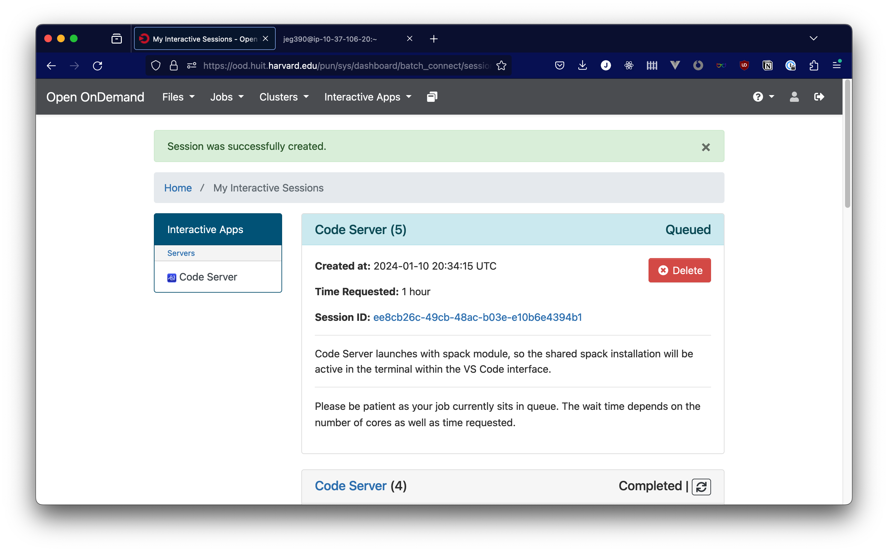
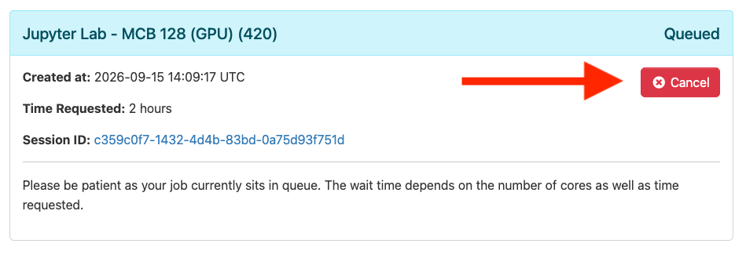
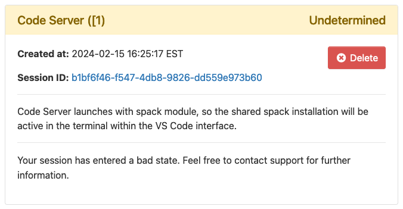

Troubleshooting
App / Job Stuck in "Queued" State; Most / All Nodes "Down" in a Queue
When running a batch job via sbatch or starting an interactive app like
Jupyter Lab or Code Server, it's normal for your job to stay "queued" for 5-10
minutes as compute resources come online for your job to run on. However,
sometimes your job can stay queued longer than that. If you've used other HPC
clusters, your instinct might be to check the cluster status with an sinfo
command from the terminal app. If you do that, you may see that
most or even all of the nodes in the queue that you're trying to run your job on
report their state as "down".
What does this problem look like?
Starting interactive apps can normally take 5-10 minutes to queue, as resources are prepared for the session. However, you may still see your app (Jupyter Lab, Code Server, RStudio, etc.) in a "Queued" state for longer than 10 minutes. If you're seeing this screen for more than 10 minutes, then you should check to see if there's an issue with the queue using the terminal app.

In an open terminal, you can use the sinfo command to view the
state of the compute queues. Here is an example of output that indicates
capacity issues in the gpu queue:
ARTITION AVAIL TIMELIMIT NODES STATE NODELIST
general* up 3-00:00:00 1 mix# general-dy-general-cr-1
general* up 3-00:00:00 1 alloc general-dy-general-cr-2
general* up 3-00:00:00 73 idle~ general-dy-general-cr-[3-75]
gpu up 2-00:00:00 299 down~ gpu-dy-gpu-cr-[2-300]
gpu up 2-00:00:00 1 down# gpu-dy-gpu-cr-1
The mix, idle, and alloc states for the general queue indicate normal
functioning in that queue. The down status for the GPU queue indicates that
there is a problem with the queue.
Why can this happen?
HUIT Open OnDemand runs in Amazon Web Services (AWS), and all of the compute nodes are Amazon Elastic Compute Cloud (EC2) instances that are allocated for use in response to jobs running on the cluster.
That means that unlike in a traditional HPC cluster that runs out of a specific data center, the compute nodes don't represent specific hardware devices. Rather, they represent the allocation of compute resources within AWS.
As a result, it's possible for a compute node to be unable to launch because Amazon does not have compute resources available in the region that we operate from. This is particularly true for GPU instances, which are in high demand worldwide and only available to courses with concrete needs for those resources. When this happens, compute nodes that were marked as "idle" in the cluster are instead marked as "down". Behind the scenes, the system will periodically try to launch EC2 instances as compute nodes so that the queued work can proceed.
This is an important distinction. In a traditional HPC data center, a node marked as "down" likely has a hardware or software failure that prevents it from being used. In this system, a node marked as "down" most often means that Amazon currently lacks the capacity to launch that instance type, and the system will keep trying to launch it until it succeeds. It could still indicate a problem with an individual node, but if you're seeing "down" for the majority of a queue, AWS capacity is the more likely culprit than catastrophic hardware failure.
Unfortunately, we don't have insight into how much capacity AWS has in different instance series at different times. This cluster is using the same infrastructure that is shared by all other AWS customers, making it difficult to anticipate capacity in advance. Guaranteeing availability requires advance planning (Amazon recommends 8 weeks) and paying for unused compute resources, which is why courses use Amazon's on-demand instance capacity.
Several defensive measures are already in place to make this as unlikely and short-lived a state as possible:
- All queues draw from multiple AWS availability zones, so compute resources can come from a number of different Amazon data centers in the same region.
- Where possible, queues are configured with multiple instance types. Some courses have requirements that can only be met by certain instance types, but we do this wherever we can.
- The system (AWS Parallel Cluster) retries the compute resource request periodically so you don't have to resubmit jobs.
What to do
If you are submitting a batch job, then checking sinfo and seeing this state,
just know that your job will take longer to start, but it will run eventually,
either when AWS has more capacity, or when work completes on the nodes that are
currently running in the queue that you requested. If there is an alternative
queue where your work can run that has capacity, and your work will run on that
queue, you may want to try that instead.
If you are running an interactive job, such as an app through the Open OnDemand
dashboard, and you're seeing this as a cluster status after checking sinfo in
a terminal, you may be better served by converting the work that you need to do
into a batch job and running it unattended, so that it can run and complete when
capacity is available. Unfortunately we're not able to estimate when AWS
capacity will become available, so we're not able to provide any estimates of
when a better time would be to launch an interactive app.
If you've started an app like Jupyter Lab or Code Server, and you're seeing that the queue is down, you may just walk away and try again later. If you have a session queued that you don't intend to wait for, it helps everyone if you cancel that session. Otherwise, the session will run whenever the resources are available, whether you are there or not. You'll find the "Cancel" button in the top right corner of an app launch card, as pictured below:

These issues affect everyone using a particular queue. If you are a student encountiering this issue, reach out to your instructor to let them know about the issue. If you are the instructor encountering this issue, or hearing about it from your students, you can contact HUIT Academic Technology for support via ithelp@harvard.edu.
If you're not sure if this applies to your situation, or if you have further questions, please reach out to ithelp@harvard.edu for further assistance.
"Undetermined" State Interactive Apps
When launching an interactive app, you may see an information card like this one:

If this happens, it is usually because of a problem in your .bashrc file. If you use the dashboard terminal app to connect to a login node, you should see the full error causing the problem. The error message should point to a solution to apply to your .bashrc file, but if you have trouble finding a solution, reach out to ithelp@harvard.edu for further assistance.
With a working .bashrc file, interactive apps should start functioning normally. However, sessions that you started will still be running. You can cancel these sessions by first finding their job ID with the squeue command in the dashboard terminal to see your running jobs with IDs. Then, run scancel {jobid} (don't include the curly braces) to cancel the running job.
The "Undetermined" state cards will also persist in your interactive session history. If you wish to clean them up and remove them, take note of the session ID in the card. You can remove the corresponding file in your home directory with a rm ~/ondemand/data/sys/dashboard/batch_connect/db/{session_id} command from the dashboard terminal or any interactive app with terminal access.